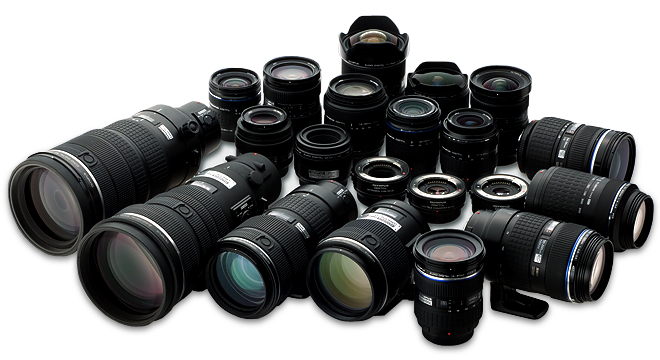
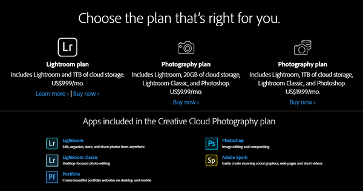
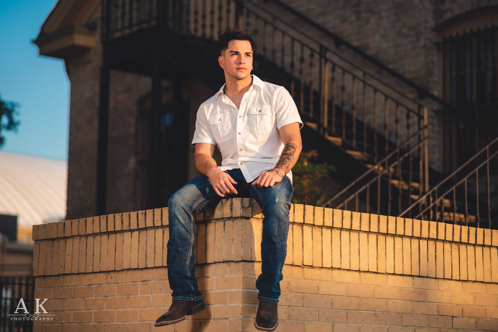

I've been a professional photographer for almost 4 years already and I have learned a few things along the way. This is just a short list I made on the things that I feel are essential when running a successful photo business.
Many people think you need to spend a lot of money in order to get a good camera, but I spent almost my whole first year using an entry level DSLR camera. If you decide to drop a lot of money on something, I would suggest to get yourself a good camera and an even better lens. Anyone photographer will tell you that the lens is arguably the most important thing when it comes to taking a good photo.
You got yourself a nice used camera and a beautiful new lens. Well now you need something to edit those awesome photos you just took. There is a lot of great photo editing programs to choose from, and I definitely feel that it is an essential part of your business. I, myself, use Adobe's photographer subscription which comes with lightroom, photoshop, and other useful tools that I use regularly. This subscription is only $10 a month and it pays for itself even if you only manage to get one session a month!
This may be a little intimidating, but when I started I had to have something to show people before I actually started charging for my services. I started by giving out a few free sessions to friends and family in order to build up a small portfolio to have something to show. I would highly recommend practicing your photography and giving away a few sessions before you come up with your pricing.
Running into difficult clients is going to happen, it's inevitable. Having a good contract to cover you when someone gives you hard time about your work or when something unexpected happens that could potentially get you in trouble will be essential.
If you were thinking of starting a photo business, I would definitely start with these few key points. A photo business can be a lot of work but it is worth it in the end when you seen that your clients are enjoying and promoting your work. I started with these few things and I have built up a pretty big portfolio with a lot of clients coming back for more sessions!